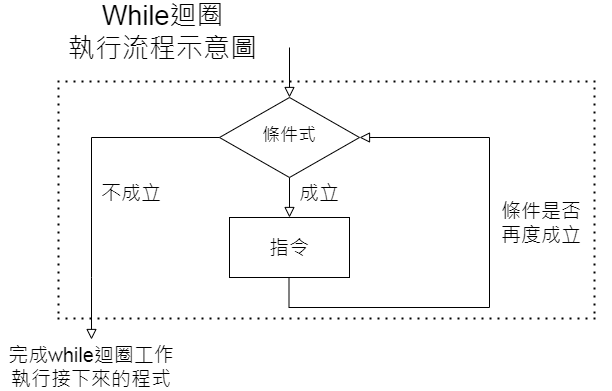
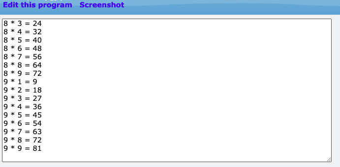

VPython的第二堂課:Python程式語言(一)
2/21 2022
類別：程式教學
一、print()
我們常用程式進行計算或抓資料，為了知道我們計算結果或程式有無執行成功，我們會需要將「數值」顯示出來，以便知道程式的運作情形，此時可以利用print()達到我們要的結果。
程式練習
1.印出10
print(10)
2.利用變數印出10
i=10
sum=55
print('i=',10,'sum=',55)
課堂任務2:印出1~100
二、while()迴圈
撰寫程式時，常常會處理重複性的工作，為了讓撰寫程式工作減化，可以用到程式中的「迴圈」工具，幫助執行重複性工作。常用到的迴圈有while()迴圈、for()迴圈。
此單元要介紹while 迴圈，它是根據指定的條件來判斷是否執行迴圈，如下圖所示。
程式練習
1.印出1~100
i=1
while (i <= 100):
print (i)
i = i + 1
2.印出1加100的和
i=1
sum = 0
while (i <= 100):
sum = sum + i
i = i + 1
print(sum)
課堂任務3:印出九九乘法表
三、利用While()畫出等速度運動
物理和Python的結合
►物理思考:
關於等速度運動:
►程式思考:
程式應建立一物體，並定義此物體的大小、顏色、初位置與速度
並讓物體位置隨時間增加一固定的位移，進而達到等速度移動的效果
程式練習
1.等速度運動
#關於球
size=0.5
ball=sphere(pos=vector(0,0,0),radius=size ,color=color.magenta ,v=vector(1,0,0))
#關於時間
t=0
dt=0.001
#關於運動情形
while (t<=10):
rate(1000)
ball.pos=ball.pos+ball.v*dt
t=t+dt
#print(t,ball.pos)
2.場景調整
於GlowScript 3.0 VPython後加入下列程式
#關於背景(場景)
scene=display(width=1200,height=800,x=0,y=0,center=vector(0,0,0),background=vector(0.9,0.9,0.9))
3.放置座標軸
#關於座標軸
pointer_a=arrow(pos=vector(0,0,0),axis=vector(20,0,0),color=color.blue,shaftwidth=0.1)